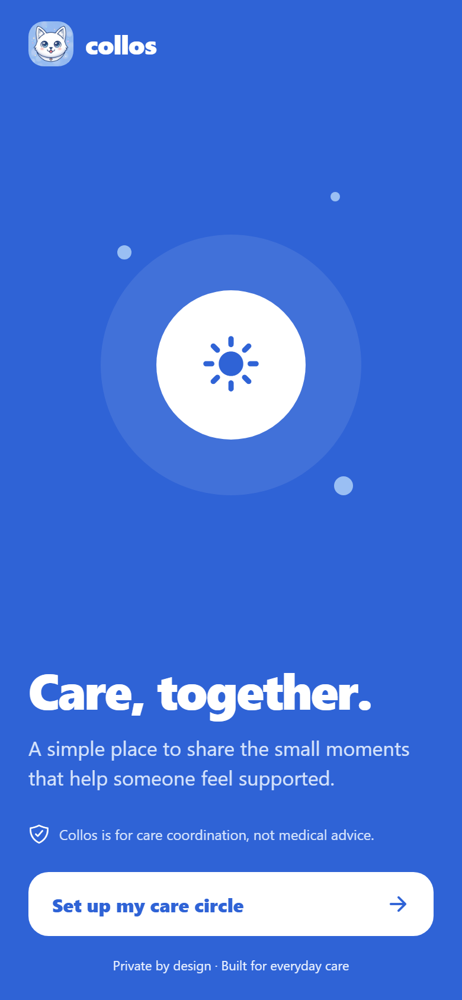
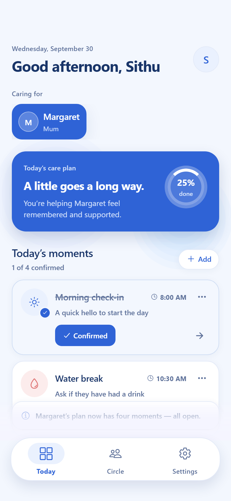

Choose your circle
Set up the people and recipients who make up your everyday care rhythm.
A calmer way to show up
Keep the small things that matter in one shared place. Collos helps families coordinate everyday care with less noise and more confidence.
Collos is a mobile app. Use the repository setup to preview it with Expo.

For the people who help care feel less lonely.
HOW IT WORKS
Care is already full of decisions. Collos takes one small thing off your plate: remembering who is doing what, and when.
Set up the people and recipients who make up your everyday care rhythm.
Turn check-ins and shared notes into one plan everyone can see.
Confirm what is done, skip what is not, and leave the next person a clear handoff.
A SHARED VIEW
From a morning hello to an evening note, the dashboard makes care visible without turning it into a chore.

SEE IT IN A MOMENT
We are preparing a short walkthrough of the Collos experience. Until then, take a look at the flow we are building for families and friends.
START WITH ONE SMALL THING
Collos is being shaped with care, one useful moment at a time.
Follow along on GitHub